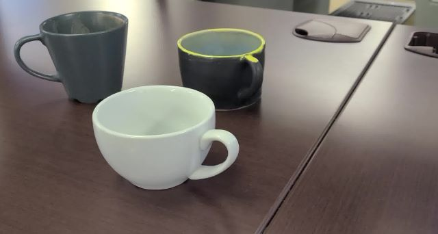
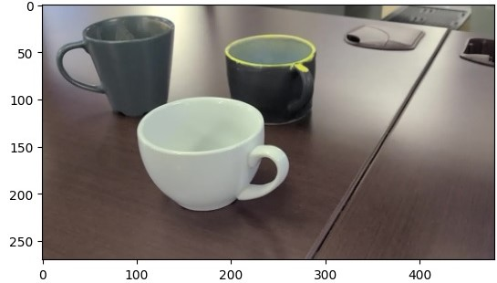
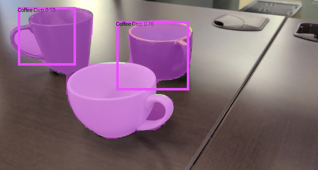
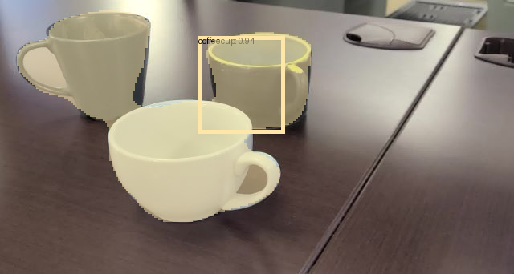

Deploying to the PC
In this tutorial, we are going to give you the tools needed to run Vision models on a PC for object detection, segmentation, or multitask allowing you to build your own applications in just a few lines of code!
Before deploying your model, it is recommended to first validate your model.
Warning
The tutorials presented in this notebook requires a trained and validated Vision model.
Info
The examples provided below are in python showing both ONNX (Float) and TFLite (Quantized) Multitask models which outputs bounding boxes and segmentation masks.
Requirements
To run the examples, let's first install the following dependencies.
$ pip install edgefirst-client
$ pip install numpy
$ pip install pillow
$ pip install matplotlib
$ pip install onnxruntime-gpu
$ pip install tensorflow
Connect to EdgeFirst Client
First take a look at using EdgeFirst Client to fetch the model artifacts from EdgeFirst Studio. Once all the dependencies have been installed, the client needs to be connected to EdgeFirst Studio to fetch the model artifacts to your PC. Run the following code block below to connect the EdgeFirst Client to the Studio. Modify the "username" and "password" to be your own. The code block will execute successfully if the credentials are correct.
from edgefirst_client import Client
username = 'username'
password = 'password'
client = Client() # For a specific server, specify `server=<>` from "test", "stage", "saas" (default).
client.login_sync(username, password)
Retrieve Training Session ID
Once you have connected to EdgeFirst Client, you can find the training session ID that contains the trained model artifacts. Once you have the training session ID, you can fetch these artifacts from EdgeFirst Studio locally to run model inference in this demo.
There are two possible ways to get the artifacts from the training session:
- Manually download
<model>.onnxor<model>.tfliteandlabels.txtfrom the EdgeFirst Studio training session. - Using
edgefirst-clientcommand line interface.
In this tutorial, you will explore option two which is to run the edgefirst-client command to fetch the model artifacts.
First verify that the connection is successful by listing the projects available.
client.projects_sync() # This will list all the projects available to the user
Output:
[Project { id: 463, name: "Object Detection", description: "This project trains and deploys Vision models for detecting objects. " },
Project { id: 1123, name: "Sample Project", description: "Official Datasets from AuZone Technologies Inc" }]
By following the EdgeFirst Studio Quickstart, you should have created a project. In this example, the project that was created is called "Object Detection". Make a note of your project ID. In this case, it is 463. Adjust the code block below to replace with your project ID.
# Retrieve the project ID where the dataset is stored (all experiments/training/validation sessions are stored in the same project)
project_id = 463
# List all the experiments/training/validation sessions available for the project
client.experiments_sync(project_id)
Output:
[Experiment { id: 2212, project_id: 463, name: "Coffee Cup", description: "This experiment will train and validate models that detect coffee cups. " }]
The command above will list all experiments in your project. Make a note of the experiment ID that contains the training and validation sessions you deployed. In this case, it is 2212. Adjust the code block below to replace with your experiment ID.
# By using the experiment ID, the user can retrieve all the training sessions available for that experiment.
experiment_id = 2212
trainers = client.trainer_sessions_sync(experiment_id)
for i, trainer in enumerate(trainers):
print(f"session {i+1}: ID [{trainer.id()}], Name: {trainer.name()}")
Output:
session 1: ID [3928], Name: Coffee Cup Detection
The command above will list all the training sessions in your experiment. Make a note of the training session ID that contains your model artifacts. In this case it is 3928. Now that you have isolated the training session that contains your model artifacts, run the code block below to list the artifacts stored in the training session. Adjust the code block to replace with your training session ID.
session_id = 3928
# The user can also list the artifacts stored in the training session by using the trainer session ID
client.artifacts_sync(session_id)
Output:
[Artifact { name: "Coffee Cup Detection-t-f58.h5", model_type: "modelpack" },
Artifact { name: "Coffee Cup Detection-t-f58.onnx", model_type: "modelpack" },
Artifact { name: "Coffee Cup Detection-t-f58.tflite", model_type: "modelpack" },
Artifact { name: "config.yaml", model_type: "modelpack" },
Artifact { name: "labels.txt", model_type: "modelpack" }]
Download the Model Artifacts
Now that you have located the training session ID containing your artifacts, you can move forward with downloading the model artifacts locally. Execute the code block below to download the artifacts Coffee Cup Detection-t-f58.onnx (model file) or Coffee Cup Detection-t-f58.tflite and labels.txt (unique labels). Ensure these files exist. Otherwise, update the code block to match your model file names.
# Download the artifacts
client.download_artifact_sync(session_id, 'Coffee Cup Detection-t-f58.onnx', filename='Coffee Cup Detection-t-f58.onnx', progress=None)
client.download_artifact_sync(session_id, 'labels.txt', filename='labels.txt', progress=None)
# Download the artifacts
client.download_artifact_sync(session_id, 'Coffee Cup Detection-t-f58.tflite', filename='Coffee Cup Detection-t-f58.tflite', progress=None)
client.download_artifact_sync(session_id, 'labels.txt', filename='labels.txt', progress=None)
Next take a look at the contents of the labels. Ensure that these labels are expected. In this case, the only class in the dataset is "background" and "coffeecup".
$ !cat ./labels.txt
Output:
background
coffeecup
Model Deployment
In this demo, we will show running the Vision model fetched above for multitask with the ONNX and TFlite models showing examples in Python. The ONNX model is a float model suited for inference in the PC, ideally using the GPU. The TFLite model is a quantized model suited for inference in edge devices, ideally using the NPU. These models will generate bounding boxes and segmentation masks on the detected objects in the image.
To run inference on the model you need to have an input image. You can capture an image with a mobile device. A sample image is shown below.

Import Dependencies
For this example, start by importing the dependencies.
import os
import numpy as np
import matplotlib.pyplot as plt
from PIL import Image, ImageFont, ImageDraw
Load the Model
Next load the model for inference. The examples below show methods for both the ONNX and the TFLite.
import onnxruntime
# Loading the Model
providers = ['CUDAExecutionProvider', 'CPUExecutionProvider']
model_path = 'Coffee Cup Detection-t-f58.onnx'
model = onnxruntime.InferenceSession(model_path, providers=providers)
inputs = model.get_inputs()
outputs = model.get_outputs()
dtype = inputs[0].type
shape = inputs[0].shape[1:3]
height, width = shape
output_names = [x.name for x in outputs]
import tensorflow as tf
Interpreter = tf.lite.Interpreter
load_delegate = tf.lite.experimental.load_delegate
delegate = '/usr/lib/libvx_delegate.so' # Edge device NPU delegate (Optional).
model_path = "Coffee Cup Detection-t-f58.tflite"
if os.path.exists(delegate) and delegate.endswith(".so"):
ext_delegate = load_delegate(delegate, {})
model = Interpreter(
model_path, experimental_delegates=[ext_delegate])
else:
model = Interpreter(model_path)
model.allocate_tensors()
# Get input and output tensors.
input_details = model.get_input_details()
output_details = model.get_output_details()
shape = input_details[0]['shape'][1:3]
height, width = shape
Run Model Inference
Now that the model has been loaded, you can pass the input image to the model for inference. Run the next code blocks below.
Input Preprocessing
Change the path to the image file as needed. First preprocess the input image to match the input requirements of the model such as the image resolution and data type. You can query the input parameters in order to resize the input tensor to the correct dimensions.
# Loading the Image
image_path = "sample-coffee-cup.jpg"
original = Image.open(image_path)
# Image Preprocessing
image = original.resize((width, height))
image = np.array(image).astype(np.uint8)
plt.imshow(image)
Output:
<matplotlib.image.AxesImage at 0x7fae37b88a30>

Run Inference
Once the input tensor has been prepared, invoke the model for inference.
input_tensor = np.expand_dims(image, axis=0).astype(np.float32)
input_tensor /= 255.0 # Float models requires unsigned normalization.
# Run Model Inference
outputs = model.run(output_names, {model.get_inputs()[0].name: input_tensor})
input_tensor = np.expand_dims(image, axis=0)
model.set_tensor(input_details[0]['index'], input_tensor)
# Model Inference
model.invoke()
Output Post-processing
Next we will post-process the model outputs such as parsing the outputs from the model and passing the outputs to the NMS for filtered boxes. The model produces four outputs: bounding boxes, classes, scores, and segmentation masks. These outputs require post-processing to filter out unnecessary boxes (NMS) and extract class IDs. For mask decoding, we select the highest probability index for each pixel.
Parsing Outputs
# Parsing the Outputs
boxes, classes, scores, masks = None, None, None, None
if isinstance(outputs, list):
for output in outputs:
if len(output.shape) == 4:
if output.shape[-2] == 1:
boxes = output
else:
masks = output
else:
scores = output
else:
masks = outputs
box_details, mask_details, score_details = None, None, None
boxes, classes, scores, masks = None, None, None, None
for output in output_details:
if len(output["shape"]) == 4:
if output["shape"][-2] == 1:
box_details = output
else:
mask_details = output
else:
score_details = output
if box_details and score_details:
boxes = model.get_tensor(box_details["index"])
scores = model.get_tensor(score_details["index"])
if box_details["dtype"] != np.float32:
scale, zero_point = box_details["quantization"]
boxes = (boxes.astype(np.float32) - zero_point) * scale # re-scale
if score_details["dtype"] != np.float32:
scale, zero_point = score_details["quantization"]
scores = (scores.astype(np.float32) - zero_point) * scale # re-scale
if mask_details:
masks = model.get_tensor(mask_details["index"])
if mask_details["dtype"] != np.float32:
scale, zero_point = mask_details["quantization"]
masks = (masks.astype(np.float32) - zero_point) * scale # re-scale
Bounding Box NMS
To filter the bounding boxes, we will use the Non-Maximum Suppression (NMS) algorithm. Before applying NMS, first define the IoU and score thresholds.
# Setting NMS Parameters
iou_threshold = 0.50
score_threshold = 0.25
Next we remove predictions with confidence scores below the score threshold.
# Decoding Detection Outputs
boxes = np.reshape(boxes, (-1, 4))
scores = scores[0][..., 1:] # Remove background boxes first
classes = np.argmax(scores, axis=-1).reshape(-1)
# Apply NMS Filters
max_scores = np.max(scores, axis=-1)
mask = max_scores >= score_threshold
scores = max_scores[mask]
boxes = boxes[mask]
classes = classes[mask]
Next we can apply NMS on the boxes and scores from the model outputs to remove boxes with overlap greater than 0.50. The NMS code snippet is placed in the Appendix below.
keep = NMS(
boxes,
scores,
threshold=iou_threshold
)
boxes = boxes[keep]
scores = scores[keep]
classes = classes[keep]
Decoding Segmentation Masks
masks = np.argmax(masks, axis=-1)
masks = masks.astype(np.uint8)
masks = Image.fromarray(masks[0])
masks = masks.resize((original.width, original.height), Image.NEAREST)
Output Visualization
Next we will load the labels.txt files to convert model output indices into meaningful names. Each bounding box gets a label, the next steps will show visualization of the post-processed model outputs with meaningful labels.
with open('labels.txt', 'r') as f:
labels = f.readlines()
labels = [label.strip() for label in labels]
labels.remove("background") # Remove background as this class is filtered out from NMS
colors = np.random.randint(0, 256, (len(labels), 3)) # Assigning colors to each label
Using Pillow, we can draw bounding boxes on the image.
font = ImageFont.load_default()
font._size = 500
for box, score, cls in zip(boxes, scores, classes):
xmin, ymin, xmax, ymax = box
# Resize boxes to original size
xmin = int(xmin * original.width)
ymin = int(ymin * original.height)
xmax = int(xmax * original.width)
ymax = int(ymax * original.height)
# Draw boxes into original image
draw = ImageDraw.Draw(original)
draw.rectangle((xmin, ymin, xmax, ymax),
outline=tuple(colors[cls]), width=5)
draw.text((xmin, ymin),
f"{labels[cls]}: {score:.2f}", fill=(0,0,0), font=font)
Similarly, we can draw segmentation masks on the image.
unique_labels = np.unique(masks).tolist()
unique_labels.sort()
for label in unique_labels[1:]:
mask = np.array(masks)
mask = mask == label
color_mask = np.array(original)
color_mask[mask] = colors[label - 1]
original = Image.blend(
original.convert('RGBA'),
Image.fromarray(color_mask).convert('RGBA'),
alpha=0.5
)
Finally, we can save the visualization output.
original.save("output.png")
This output visualization will look like the following for the models ran.
| ONNX Output | TFLite Output |
|---|---|
 |
 |
Appendix
ONNX Python Script
The python example provided above for deploying the ONNX model can be downloaded as a single python script by clicking on this link. Ensure to modify the lines that points to the ONNX model and the input image and then run the script using python onnx_example.py.
TFLite Python Script
The python example provided above for deploying the TFLite model can be downloaded as a single python script by clicking on this link. Ensure to modify the lines that points to the TFLite model and the input image and then run the script using python tflite_example.py.
NMS Code Snippet
This link points to the original source of the NMS code.
# NMS implementation in Python and Numpy
def NMS(bboxes, psocres, threshold):
xmin = bboxes[:, 0]
ymin = bboxes[:, 1]
xmax = bboxes[:, 2]
ymax = bboxes[:, 3]
sorted_idx = psocres.argsort()[::-1]
areas = (xmax - xmin + 1) * (ymax - ymin + 1)
keep = []
while len(sorted_idx) > 0:
rbbox_i = sorted_idx[0]
keep.append(rbbox_i)
overlap_xmins = np.maximum(xmin[rbbox_i], xmin[sorted_idx[1:]])
overlap_ymins = np.maximum(ymin[rbbox_i], ymin[sorted_idx[1:]])
overlap_xmaxs = np.minimum(xmax[rbbox_i], xmax[sorted_idx[1:]])
overlap_ymaxs = np.minimum(ymax[rbbox_i], ymax[sorted_idx[1:]])
overlap_widths = np.maximum(0, (overlap_xmaxs - overlap_xmins+1))
overlap_heights = np.maximum(0, (overlap_ymaxs - overlap_ymins+1))
overlap_areas = overlap_widths * overlap_heights
ious = overlap_areas / \
(areas[rbbox_i] + areas[sorted_idx[1:]] - overlap_areas)
delete_idx = np.where(ious > threshold)[0]+1
delete_idx = np.concatenate(([0], delete_idx))
sorted_idx = np.delete(sorted_idx, delete_idx)
return keep